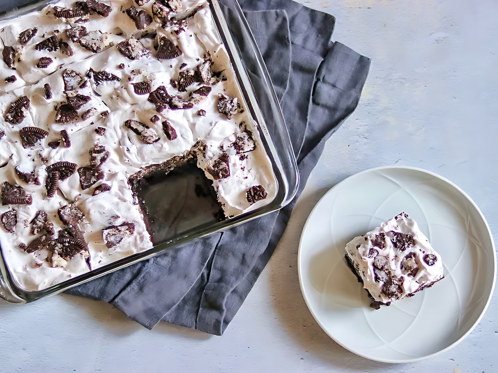

Cookies and Cream Brownies

Description
If you love Oreo cookies, you'll love these cookies and cream brownies! They are easy to make by topping homemade chocolate brownies with a layer of Oreo cookies and a creamy topping for a deliciously decadent dessert.
Recipe
Ingredients
- Sugar: 1 ½ cups white sugar.
- Flour: ¾ cup all-purpose flour.
- Cocoa: ½ cup high-quality unsweetened cocoa powder.
- Butter: ¾ cup unsalted butter, melted.
- Eggs: 3 large eggs.
- Cookies: 32 chocolate sandwich cookies (such as Oreo), divided.
- Cream: 1 (8 ounce) container frozen whipped topping (such as Cool Whip), thawed.
- Salt: ½ teaspoon salt.
- Baking powder: ¼ teaspoon baking powder.
- Vanilla extract: 1 teaspoon vanilla extract.
How to Make Cookies and Cream Brownies Step-By-Step
Here's a very brief overview of what you can expect when you make homemade Cookies and Cream Brownies:
- Step 1: Preheat the oven to 350 degrees F (175 degrees C). Grease a 9-inch square baking pan.
- Step 2: Mix sugar, flour, cocoa powder, salt, and baking powder together in a mixing bowl.
- Step 3: Whisk butter, eggs, and vanilla together in a separate bowl. Add butter mixture to the flour mixture and mix until well combined.
- Step 4: Pour 1/2 of the batter into the prepared baking pan and smooth out with a spatula. Add 16 Oreo cookies in an even layer (4 rows of 4 cookies), then spread the remaining 1/2 of the batter on top.
- Step 5: Bake in the preheated oven until edges are brown and center is set, 30 to 35 minutes.
- Step 6: Remove pan from the oven and set on a wire rack. Let brownies cool completely, at least 30 minutes.
- Step 7: Crush 12 of the remaining Oreo cookies. Place whipped topping in a bowl and fold in crushed cookies; spread mixture over the top of the brownies. Crush the remaining 4 cookies; sprinkle over the top of the whipped cream mixture.
- Step 8: Keep refrigerated until you are ready to slice and serve.